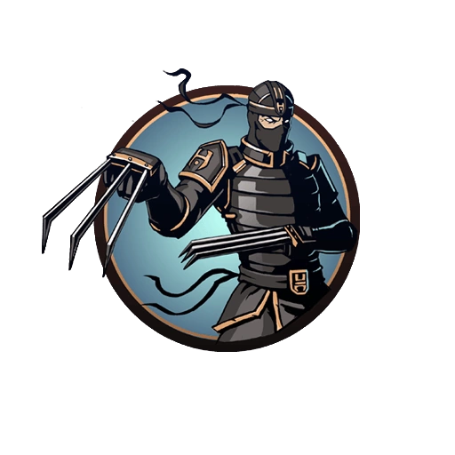
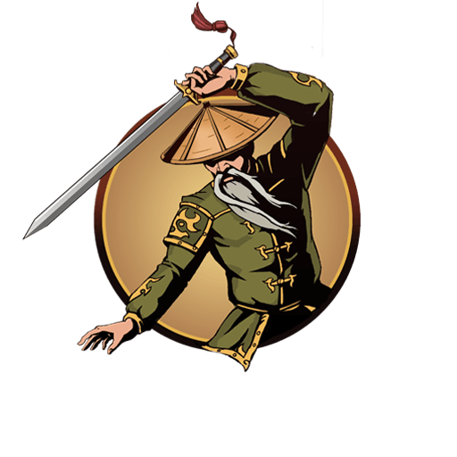
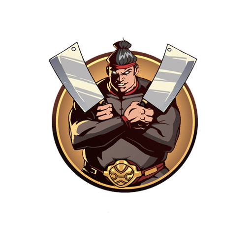
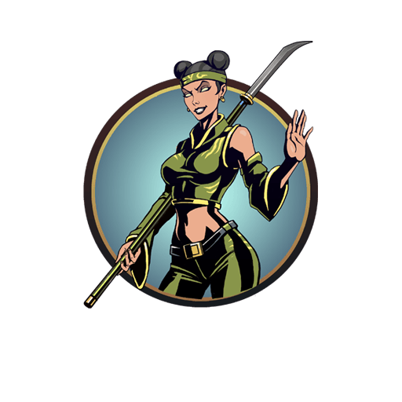
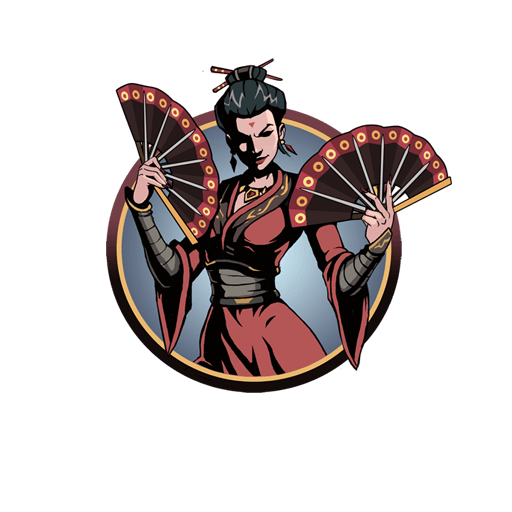
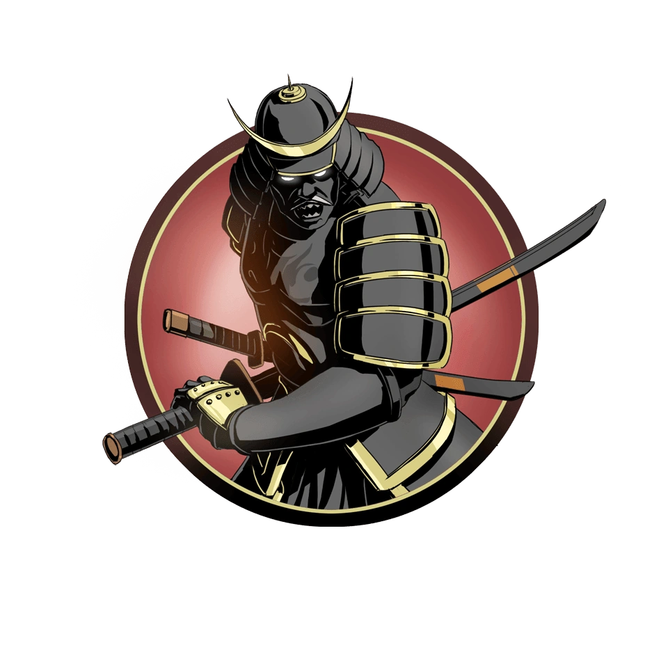
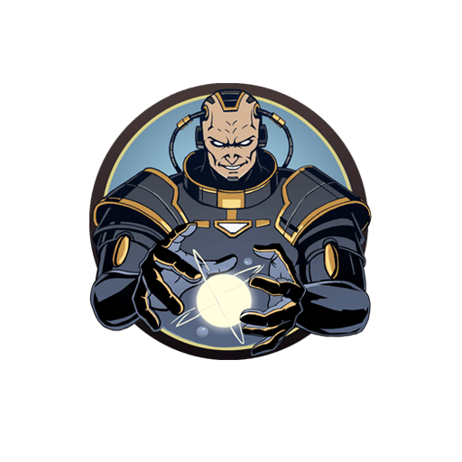

О том, кем был Рысь до создания Ордена ассасинов, где он является главой, в сюжете оригинальной Shadow Fight 2 не раскрывается. В специальном издании можно узнать, что до создания Ордена ассасинов он был наёмным убийцей, который пытался убить Князя. Буйный и крайне самодовольный демон. После своего поражения Тени он в недоумении отдаёт ему печать, считая, что всё, что нужно было Тени, – главенство над Орденом. После того как Тень одолевает всех демонов и подходит к Вратам Теней, Рысь получает письмо от Сёгуна о просьбе собраться всем демонам у Врат, дабы остановить Тень и предотвратить их открытие. После очередной неудачи Рысь возвращается в своё логово, где его ждет Тень. Рысь понимает, что герой желает уничтожить все печати и вновь открыть Врата, чтобы спасти жертву Титана – Мэй. После проигрыша, Рысь предупреждает, что Тень зря в это ввязался, что Титан — крайне могущественное и непобедимое существо. «Он способен влиять на мысли, изменять воспоминания, кто способен сравниться с такой силой? Ты погубишь всех нас, безумец!»

Подобно другим Демонам, о прошлом Отшельника практически ничего неизвестно, кроме того факта, что он основал свою собственную школу боевых искусств. Судя по обстановке в городе после освобождения Отшельника из Врат Теней, ключевым в его обучении было умение разрушать.
Пока Тень находился в городе, подконтрольному Рыси, Отшельник завербовал нового ученика — Журавля, который ранее обучался у Сэнсэя, помогающего Тени во время его пути. Как только Печать Рыси оказалась в руках Тени, Сэнсэй сказал ему, что его ученик пропал и его необходимо вернуть.
По прибытии в город протагонист сразу сталкивается с телохранителем (и учеником) Отшельника, который интересуется, не пришел ли и он ради состязания, устроенного Отшельником ради раскрытия его секрета победителю. Оказывается, что Дракон является одним из участников турнира, а потому, чтобы добраться до Отшельника, он должен быть побежден.
Перебивая учеников Отшельника одного за другим, протагонисты узнают от одного из них (а именно от Богомола) о его тайне — это магия — нестабильная энергия, контроль над которой требует очень хорошей концентрации. Это интригует Мэй, но заполучить магию возможно будет лишь после победы над главной сенсацией этого города.
Последним учеником Отшельника является Журавль, тот самый пропавший ученик Сэнсэя. Последний говорит ему, что он выбрал не тот путь. Журавль же не соглашается со сказанным и вступает в схватку с Тенью (бой будет легкий: Журавль не имеет оружия, являясь единственным телохранителем в игре с такой особенностью). Он проигрывает и понимает, что был не прав.
Тень встречает Отшельника. Тот ни угрожает, ни оскорбляет персонажа, а лишь спрашивает у него, является ли Тень тем, кого он ждал столько лет. В первом бою Тень проигрывает, но Отшельник говорит ему, чтобы тот сосредоточился и попробовал еще раз. Как итог, Отшельник проигрывает схватку. Печать и Магия в руках персонажа. Напоследок Отшельник просит Тень устранить Мясника — третьего демона в списке, который угрожает ему смертью.

Перед заточением Мясник собирает банду убийц в городе-деревне на берегу моря. После открытия Врат Теней Мясник вернулся в город и возобновил деятельность своей банды. Впервые о нём в игре говорит Отшельник, прося Тень избавиться от него, ибо тот хочет узнать секрет магии Отшельника. Тень соглашается и отправляется в город.
Тень достигает Мясника. Тот мнит свою деятельность вполне нормальной и угрожает Тени. Победа остается за Мясником. Он говорит, что будет продолжать побеждать Тень, покуда последняя капля его крови не упадет на землю. Однако, Мясник проигрывает бой и отдает красную Печать.
После поражения встречается с другими Демонами у Врат Теней и говорит, что после победы всё, что останется от Тени — его. Затем он противостоит Тени и в Интерлюдии, но проигрывает снова. Он говорит, что хоть герои считают его чудовищем, но даже сам Мясник в ужасе от Титана.

Задолго до открытия Тенью Врат Теней Оса была обычной девушкой, являвшейся дочерью пиратского Барона, правившего провинцией на берегу моря. Неизвестно как, но она встретилась со Вдовой. Она убедила Осу в том, что править должны женщины, и поэтому Оса убила своего отца и заняла его место. Это не понравилось части пиратского экипажа, и поэтому некоторые из них перешли в так называемую Новую Кровь — организацию повстанцев (известно лишь три члена этой организации: Кракен, Палаш и Акула). Но сторонники остались и у Осы — Боцман и Китобой.
До или после этих событий она заполучила силу фиолетовой Печати.
Оса освободилась из заточения вместе с другими шестью демонами и двинулась в сторону города, которым когда-то правила. Она восстановила свое правление и боролась с повстанцами. После победы над Мясником, Проныра говорит Тени о том, что земли, в которые они направляются, являются её (Осы) владениями.
По прибытии Тень сразу встречает одного из членов Новой Крови — Кракена. Тот собирается забрать корабль Проныры, но схватку выигрывает Тень. Кракен завуалированно предупреждает главного героя об опасности, исходящей от одновременно двух организаций.
Впоследствии Тени удается устранить Палаша и Акулу и чуть больше узнать о происходящей войне в этой провинции. После поражения Акулы Боцман рассказывает Тени о том, что Проныра поставлял оружие Новой Крови, и поэтому Боцман (скорее всего) собирается ликвидировать Проныру. Главный герой вновь побеждает, и Боцман уходит. Но осталась лишь одна проблема на пути к Осе — Китобой. Тот говорит, что Оса — ужасный правитель и что всю ее работу исполняет он сам. После поражения он сожалеет обо всем случившемся и дает Тени пройти.
При встрече Оса благодарит Тень за устранение главных бунтовщиков и ее никчемных советников и раскрывает свой план: она собирается править единолично, и лишь Тень мешает ей его осуществить. Она вступает с ним в схватку и побеждает, говоря, что это еще не всё, на что он способен. И это правда: Тени все же удается одолеть Осу и забрать Печать. Оса говорит, что все произошедшее — вина Вдовы — следующего Демона в списке Тени.
После этого Оса появляется на Вратах Теней, говоря, что теперь Тени противостоят все шестеро стражей Печатей. Но она вновь проигрывает, как и другие. Потом предстоит сразить ее еще раз — уже для вторичного открытия Врат — после поражения она говорит Тени, что ему не понравится то, что находится за Вратами, а также говорит ему забыть про Мэй, пока не поздно. По сюжету после этого она не появляется.

История Вдовы до открытия Врат Теней очень плохо раскрывается. Известно лишь, что она убедила Осу убить ее отца и занять его место на пиратском троне.
Когда Врата открываются, Вдова стала управлять городом, очень близкому к самим Вратам (ближе только провинция Сёгуна, где они и располагаются). Она подчинила себе всех мужчин в городе, чтобы они поубивали друг друга. По прибытии Тени в город, Проныра тоже попадает под действие чар, но сохраняет разум. Сэнсэй же пытается бороться с этим колдовством, и у него получается. Встречает их здесь сама Вдова, подкатывая к Тени.
С каждым побежденным ее телохранителем ужасная истина узнает все подробнее и подробнее. После поражения Медведя становится ясно, что есть еще те, кто в состоянии бороться с чарами. Пятым телохранителем Вдовы является Пума — единственная девушка-телохранитель Вдовы. После поражения она говорит, что Вдова очень легко справится с Тенью и сделает его "своей игрушкой".
Тень вновь встречается со Вдовой, а та говорит, что они могли бы стать хорошими друзьями... и даже больше. Но это лишь уловка — Вдова нападает на героя. Но Тень побеждает Вдову. Она спрашивает у Тени, каково это — победить слабую женщину и тот ли это человек, который закроет Врата Теней. Напоследок она предупреждает его об опасности, исходящей от Врат.
Встречается у Врат Теней, после поражения Демонов она говорит, что пусть Тень упивается своей победой, но они встретятся вновь. Так и случается: на Интерлюдии Тень приходит ко Вдове снова. После ее поражения она говорит Тени, что открывать Врата снова — самоубийство, ведь осталась лишь одна целая Печать — нефритовая.

В отличие от многих других Демонов, история Сёгуна раскрывается лучше всего — он был военачальником, служившим Князю. Впоследствии правление провинцией перешло к Сёгуну (по-видимому, из-за событий в спец. версии игры, в которой добавляется режим «Старые раны»), а Князь исчез.
Когда Врата открываются, Сёгун занимает территорию, где они располагаются. По прибытии в провинцию Тень вместе с его командой не встречают ни души, только лишь врагов в пустыне и ледяной пещере под землей. В городе, оккупированном Сёгуном, их встречает Капрал, угрожающий Тени. Тень побеждает его, и тот объявляет его пропавшем давным давно Князем. Впоследствии об этом узнают и другие телохранители, и убеждаются в этом после поражения.
Когда остается лишь Генерал, Сёгун говорит ему, чтобы тот ликвидировал «Князя» и его помощников. Он присылает наемников, которых Тень очень легко побеждает. Впоследствии на него нападает и сам Генерал. После поражения он говорит Тени, что кара, которую он уготовил Генералу, не сравнится с гневом Сёгуна.
Последняя Печать в руках Сёгуна, поэтому его надо победить. Он говорит Тени, что наконец-то вновь встречает его после стольких лет и он не тот Князь, которого он знал. После победы он говорит, что Сёгун — могущественный император и одолеть его невозможно. Но потом Тень побеждает его, во что Сёгун с трудом верит.
Все Печати в руках героя, остается лишь закрыть Врата Теней, но у их подножия его встречают все шестеро ранее побежденных Демонов. Сёгун в их числе. После поражения он говорит, что Демоны — сильнейшие воины в этом мире, но они не смогли победить обычного человека. Далее он встречается в Интерлюдии и говорит, что, пока Титан не пришел в этот мир, это его владения. После поражения он смиряется с тем фактом, что Врата открыты вновь и напоследок говорит, что Титан погубит всех.

Судя по рассказам почти каждого персонажа, встречающегося в седьмом акте, он является всемогущим завоевателем миров. Что он делал конкретно — неизвестно. Насчет этого есть лишь несколько описанных в игре событий: Титан знал, что есть лишь одна раса, которая не подчинится ему так просто — Древние. Он уничтожил их всех, но один из них выжил и бежал в Каменный Лес. Он стал наставником четырех героев (Гарпия, Голем, Мефисто и Омут), которые попытались одолеть Титана, но затем были повержены и поставлены на колени им же. Как — неизвестно.
Будучи учёным, он создал особых солдат в таинственном Инкубаторе, а также экспериментировал с Теневой энергией, которую, возможно, и создал. Продукты неудавшихся экспериментов — Падальщиков он выбрасывал за предел Цитадели, где они провели остаток своего существования, пока не были убиты Тенью.
Однако, самой знаменитой его заслугой является создание межпространственного портала — Врат Теней. Именно с их помощью он обрел свою силу. Также, ее разделили и 6 других воинов. Благодаря Вратам, он подчинил себе пятерых воинов из других версий реальности, видимых в игре (Ассасина, Мастера, Гуру, Корсара и Императора).
Впервые Титан предстает перед нами во вступительном ролике Shadow Fight 2, но вторичное его появление приходится лишь на ролик, появляющийся после закрытия Врат Теней. Он утащил в закрывающиеся врата Мэй, что входило в его план по устранению Тени и выход в его мир. Впоследствии, Тени удается пройти сквозь Врата, в мир самого Титана. Там он встречает Сайфера и Кали, которые в дальнейшем помогут ему дойти до Цитадели и покончить с Титаном.
Как только Тень заручается поддержкой Древнего, он побеждает лучшего воина Титана — Савана на турнире в Инкубаторе, он встречает таинственного Судью, которым оказывается Мэй. Тогда Сайфер и Кали говорят Тени, что пора действовать, и направляются к обиталищу Титана. По пути Тень побеждает стражей Каменного Леса, вызванных Древним перед тем, как он покинул Лес.
У ворот в Цитадель Тень и Кали встречают Падальщиков — неудавшийся эксперимент Титана. После победы над ними, Тень восходит на Крейсер и сталкивается там с самим Титаном, объявившим его (Тень) «Венцом своего творения». Перед боем с Титаном, он показывает герою пятерых своих воинов, принявшим другое решение в альтернативной реальности. Эти воины являются ничем иным, как двойниками Тени. Каждый из них действовал по-разному: Ассасин победил Рысь и завладел его Орденом; Мастер превзошел Отшельника и стал лучшим мастером Востока; Гуру одолел Мясника и стал главой его банды; Корсар сверг с трона Осу и завладел ее флотом; а Император казнил Сёгуна и стал управлять империей вместо него.
После победы над двойниками, Тень входит в сердце Цитадели и там вновь сталкивается с Титаном — теперь уже в последний раз. Но перед этим он взывает к Мэй, заставив ее сражаться с Тенью, но и тут он побеждает: Мэй освобождается от магии Титана и уходит обратно в мир людей.
Тем временем, Титан говорит Тени, что »Скоро ты увидишь, как твой мир падёт, и станет кровью новой, жестокой империи». После этого, они начинают смертельную схватку, схватку за судьбу тысячи миров и родного мира Тени. Бой длится очень долго, Тень находится на грани смерти, но ему удается нанести из последних сил смертельный удар Титану. Сфера, которая находится у Титана, не выдерживает, и взрывает всю цитадель. Титан погибает, а Тень растворяется, но всё же, выживает, и возвращается в свой родной мир уже в облике человека.